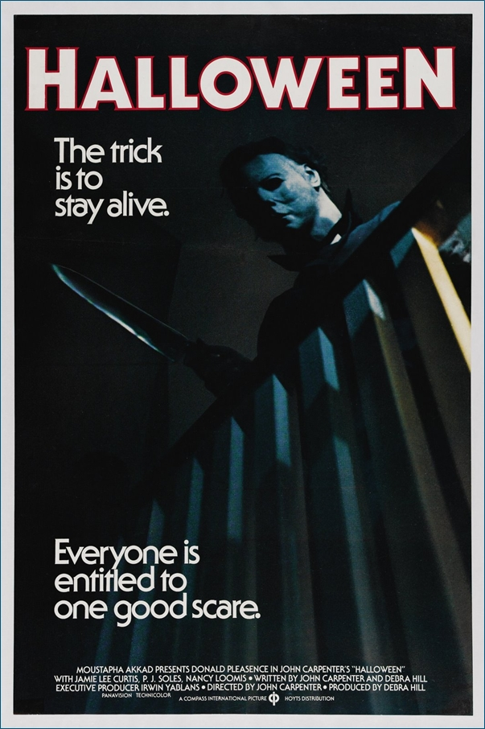
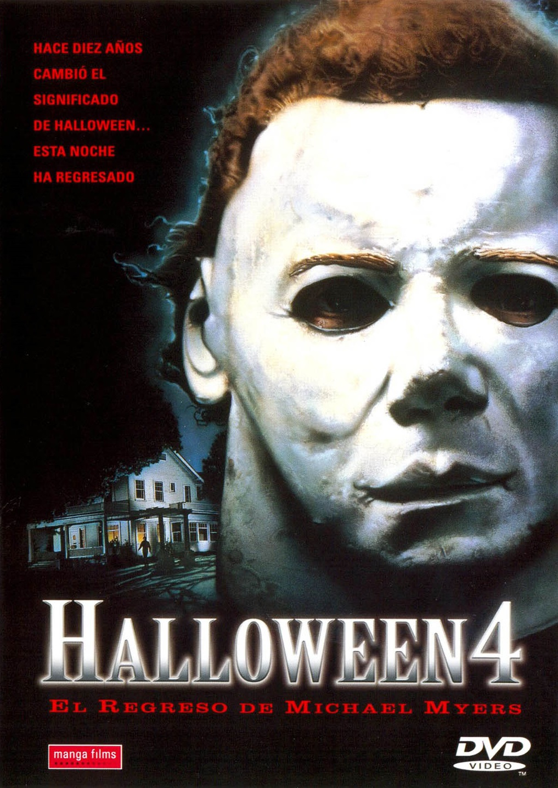
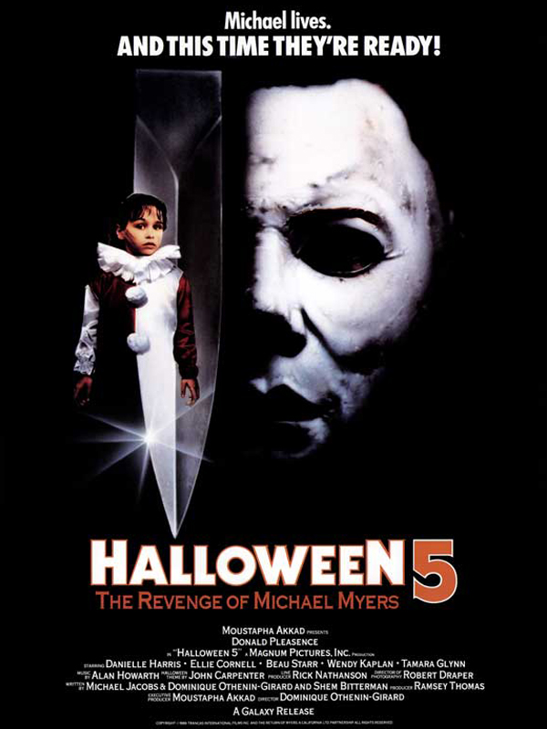
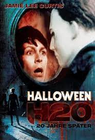
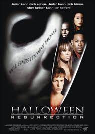

John Wick 1

La ciudad de New York se llena de balas cuando Jhon Wick, un exasesino a sueldo, regresa de su retiro para enfrentar a los mafiosos rusos, liderados por Viggo Tarasov, que destruyeron todo aquello que el amaba y pusieron precio a su cabeza.
John Wick 2

El legendario sicario Jhon Wick abandona su retiro cuando, debido a un pacto de sangre que le vincula a un colega, se ve obligado a viajar a Roma para enfrentarse a los asesinos más pegrilosos del mundo y aniquilar a una oranización secreta.
John Wick 3

El legendario sicario John Wick es perseguido por las calles de Nueva York. Lo buscan unos mercenarios por una recompensa de 14 millones de dólares por su cabeza y por romper con una regla.
John Wick 4

El marqués Vincent de Gramont pretende matar a John Wick para afianzar su poder en la Orden Suprema. Sin embargo, John tratará de adelantarse a cada uno de sus movimientos hasta lograr enfrentarse cara a cara con su peor enemigo.
Lucy
Lucy, una joven que ejerce de "mula" para unos narcotraficantes, adquiere poderes sobrenaturales tras romperse una de las bolsas de droga que transporta y absorber los estupefacientes.
Sin Limites

El escritor Eddie Morra se enfrenta al desempleo, al rechazo de su novia y está convencido de que no tiene futuro. La situación cambia cuando un amigo le presenta la MDT, una droga que mejora las habilidades mentales.
Halloween
Un maniático regresa a su ciudad natal para continuar con la plaga de terror que inició hace quince años.
Halloween 2

El asesino Michael Myers sigue a un blanco herido hasta el hospital el 31 de octubre en Haddonfield, Illinois.
Halloween 3

Dos personas descubren que un comercial de televisión será la señal para que un psicópata haga explotar unas máscaras de Halloween.
Halloween 4
Para continuar con sus asesinatos de diez años atrás, Michael Myers vuelve a aterrorizar la ciudad de Haddonfield.
Halloween 5
Tras permanecer en coma durante un año, Michael Myers despierta y emprende un camino de regreso a Illinois decidido a matar a Jamie, su sobrina, quien ha sido encerrada en una institución mental tras el último intento de Michael de asesinarla.
Halloween 6

En Haddonfield, la noche de Halloween no es una fiesta cualquiera porque durante esta celebración, el psicópata Michael Myers regresa a su pueblo natal con un único objetivo: cometer una masacre.
Halloween 7
Dos décadas después de la masacre de 1978, Laurie Strode, ahora decana de la escuela privada de Carolina del Norte y madre soltera, tomará medidas extremas para proteger a su hijo después de enterarse de la fuga de prisión de Michael Myers, su hermano.
Halloween 8
Un grupo de adolescentes gana un concurso para pasar una noche en la casa donde creció Michael Myers, el cual será emitido en directo por Internet. Ellos esperan vivir una fiesta y obtener publicidad gratuita, pero las cosas acaban muy mal.
Halloween El Final

Cuatro años después de la desaparición de Michael Myers, el joven Corey lo encuentra maltrecho en las alcantarillas. Poco a poco, se establece un extraño vínculo entre estos dos personajes unidos por la venganza y la locura.